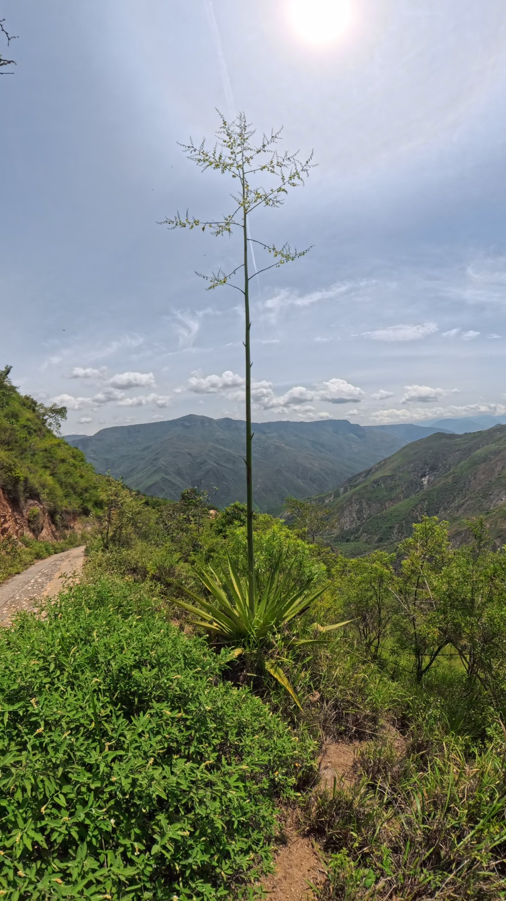
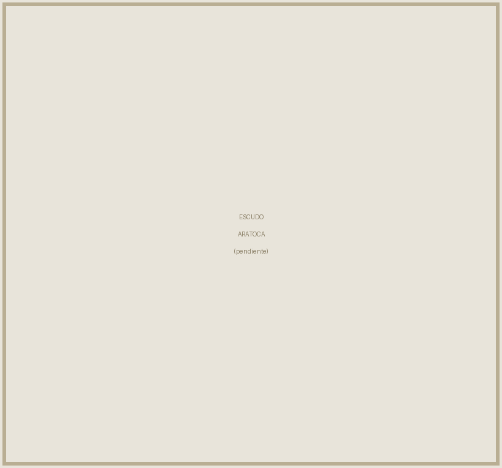
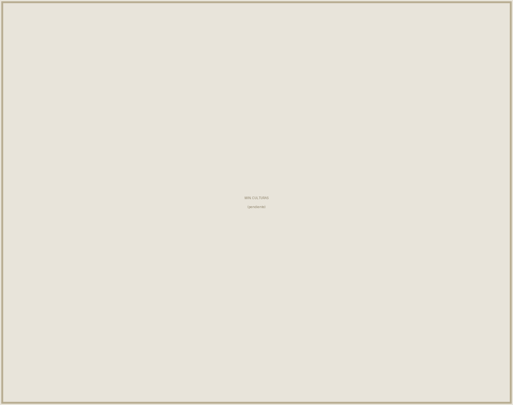
Historia, transformación y futuro del fique en Santander
Primera edición, Aratoca, Santander, Colombia, 2026.
Publicación institucional de la Alcaldía Municipal de Aratoca, en el marco del proyecto Taller de Oficios del Fique: creatividad, tradición y emprendimiento en Aratoca.
Alcalde Municipal:
Secretaría de Cultura y Turismo:
Coordinación del proyecto:
Investigación y textos:
Fotografía:
Diseño y diagramación:
ISBN:
Esta obra fue posible gracias a las familias cultivadoras, desfibradoras, hilanderas y tejedoras de fique de Aratoca, que abrieron sus parcelas, sus talleres y su memoria.
Los saberes aquí documentados son patrimonio colectivo de las comunidades artesanas de Aratoca y de la provincia de Guanentá. Se autoriza la reproducción total o parcial con fines educativos, comunitarios y no comerciales, citando la fuente.
Distribución gratuita. Prohibida su venta.
Municipio de Aratoca, Santander · Ministerio de las Culturas, las Artes y los Saberes.
Hay municipios que se reconocen en un río, en una montaña o en una fecha. Aratoca se reconoce en una fibra. Durante generaciones, el fique ha sido aquí mucho más que un cultivo: ha sido el oficio que sostuvo la casa, el hilo que unió a las familias en la enramada y el lenguaje con el que este territorio aprendió a nombrarse ante el resto de Santander.
Quienes crecimos viendo a nuestras madres y abuelas hilar en el corredor, y a nuestros padres bajar de la loma con el manojo de fibra al hombro, sabemos que ese conocimiento no está escrito en ningún manual. Se aprende mirando, se corrige con la mano encima y se transmite en voz baja mientras se trabaja. Es precisamente esa condición —oral, práctica, cotidiana— la que hoy lo pone en riesgo.
Este libro nace de una convicción sencilla: lo que no se documenta se olvida, y lo que se olvida deja de producir. Por eso la Alcaldía Municipal de Aratoca decidió reunir en un solo volumen la historia larga del fique en nuestro territorio, la descripción técnica de cada fase de su transformación y una lectura honesta de los desafíos que enfrenta el sector. No se trata de un homenaje nostálgico. Se trata de una herramienta de trabajo.
Las páginas que siguen recogen la herencia del pueblo Guane, el auge de los empaques agrícolas durante el siglo xx, la crisis que trajeron las fibras sintéticas y la reinvención que hoy adelantan nuestras familias artesanas hacia productos de mayor valor agregado. También abordan un asunto que ya no podemos aplazar: el aprovechamiento del bagazo y el cuidado de nuestras fuentes hídricas.
Entregamos esta primera edición a los artesanos y artesanas de Aratoca, a los jóvenes que buscan en el territorio una alternativa de vida digna, a los docentes que quieran llevarlo al aula y a quienes nos visitan y desean entender qué hay detrás de una mochila, una alpargata o un tapete de cabuya.
Que este libro circule, se raye, se preste y se discuta. Ese será el mejor indicio de que cumplió su propósito.
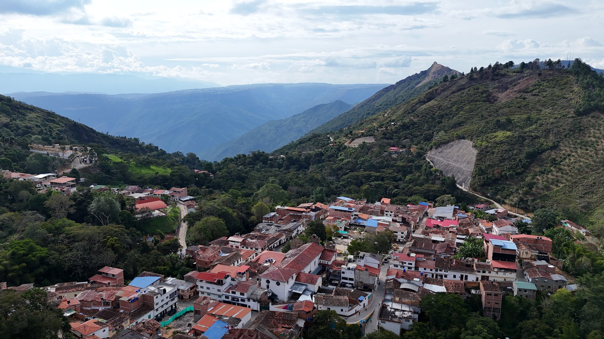
El recorrido está organizado en tres movimientos. El primero traza la historia larga del fique, desde las prácticas originarias del pueblo Guane hasta el panorama socioeconómico contemporáneo, en un diálogo intercultural que pone en valor la herencia indígena y campesina. El segundo detalla el ciclo técnico y biológico de la planta, visibilizando los retos ambientales y productivos del oficio. El tercero recoge las conclusiones y proyecta las rutas de innovación que el sector necesita recorrer.
El énfasis está puesto en el municipio de Aratoca, pero el relato es válido para toda la franja fiquera de las provincias de Guanentá y Comunera. Lo que aquí se cuenta ocurre, con matices, en Mogotes, San Joaquín, Curití y Onzaga.
El texto puede leerse de corrido, pero está pensado también para consultarse por partes. Los capítulos técnicos funcionan como fichas de trabajo: describen paso a paso lo que ocurre entre la penca cortada en la loma y el producto terminado en el telar.
A lo largo del libro se emplean los términos que usan los propios artesanos: penca, cabuya, varillado, escarmenado, cogollo, bagazo. Todos ellos están reunidos y explicados en el glosario que cierra la obra. Conservar el vocabulario del oficio es también una forma de conservar el oficio.
Este no es un inventario cerrado. La documentación de un saber vivo nunca termina: cada vereda guarda variantes de la técnica que no alcanzan a caber en un primer volumen. Esta edición se entrega como punto de partida y como invitación abierta a continuarla.
Las láminas fotográficas a página completa que acompañan cada parte del libro fueron registradas en las veredas y el casco urbano de Aratoca, y documentan la técnica del varillado, el lavado artesanal de la fibra y el paisaje productivo del municipio.
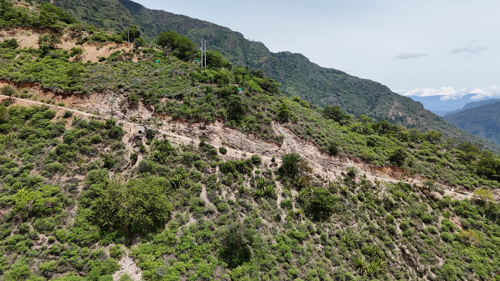
En el sureste de Santander, así como en zonas de Cundinamarca y Boyacá, el pueblo Guane se destacó por su profunda conexión con la tierra y por sus notables habilidades manuales. Esta cultura, dedicada principalmente a la caza y a la agricultura, desarrolló una sofisticada expresión plástica a través de la cerámica y de la confección textil.
La distinción entre materiales revela una comprensión precisa de las propiedades de cada fibra. Mientras el algodón se reservaba para mantas finas y prendas de abrigo bellamente decoradas, la fibra del fique era el material predilecto para la elaboración de indumentaria utilitaria: tocados, bolsas y mochilas. No se trataba de una jerarquía de prestigio, sino de una asignación funcional. El algodón abrigaba; el fique cargaba, resistía y duraba.
Esa decisión técnica tomada hace siglos sigue vigente. Los diseños de aquellas piezas guardan una asombrosa similitud con las que los artesanos contemporáneos continúan produciendo en Aratoca y en los municipios vecinos. La forma de la mochila, la lógica del trenzado, la manera de rematar un borde: son gestos que atravesaron la Colonia, la República y la industrialización sin perder su estructura esencial.
Dado que los vestigios físicos de la cultura Guane son escasos, las piezas textiles que han logrado conservarse poseen un valor antropológico incalculable. Las fibras vegetales son, por naturaleza, materiales perecederos: se degradan con la humedad, el calor y el tiempo. Que algunas hayan sobrevivido las convierte en testimonio vivo de una destreza técnica milenaria.
Este dato tiene una consecuencia directa sobre el presente. Cada artesano que hoy hila y teje fique en Aratoca no está simplemente ejerciendo un oficio: está sosteniendo la única versión funcional que queda de ese conocimiento. Los museos conservan los objetos; las manos conservan el método.
Los museos conservan los objetos.
Las manos conservan el método.
La historia de Aratoca está profundamente ligada al cultivo, procesamiento y tejido ancestral de la fibra de fique. Esta tradición, heredada de la cultura indígena Guane, se convirtió durante décadas en el motor económico y en la principal fuente de empleo de miles de familias campesinas de la región.
La continuidad no fue accidental. El fique prospera en suelos pobres, pendientes y de baja retención de humedad —exactamente las condiciones que caracterizan buena parte del territorio aratoqueño—. Donde otros cultivos exigen riego, planicie o fertilización constante, el fique se instala y persiste. Esa compatibilidad entre planta y paisaje explica por qué el oficio echó raíces aquí con tanta fuerza y por qué logró sostenerse durante generaciones.
A ello se sumó una segunda condición, esta de orden social: el conocimiento se distribuyó ampliamente. En Aratoca, gran parte de la población campesina aprendía a hilar y a tejer el fique desde la infancia, transmitiendo este conocimiento de generación en generación. No existía un gremio cerrado ni un taller especializado que monopolizara la técnica. El saber estaba en las casas.
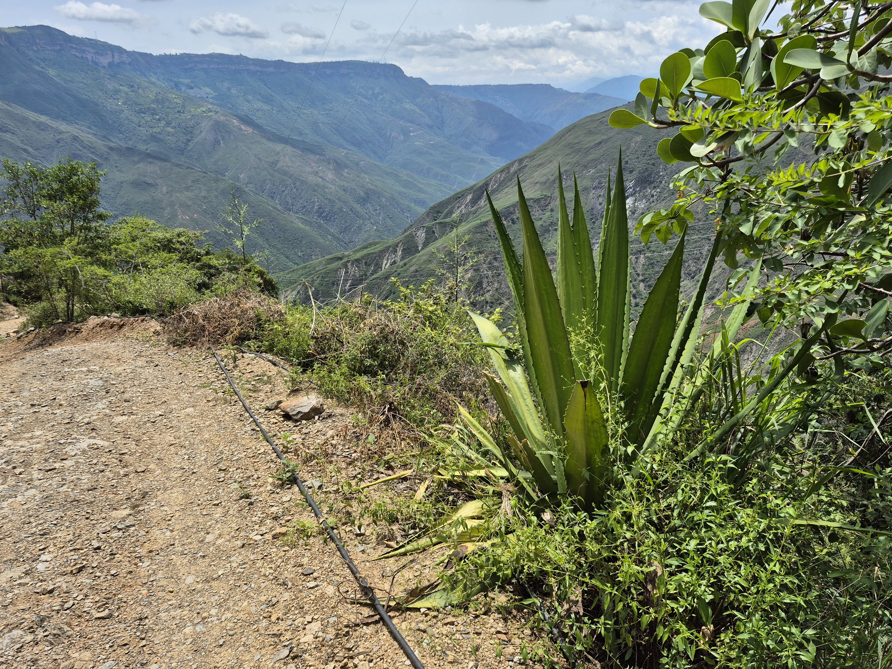
La producción nacional de cabuya se concentra en departamentos como Santander, Nariño, Antioquia, Caldas y Boyacá. Las cifras nacionales han llegado a reportar más de dieciocho mil hectáreas sembradas, cultivadas casi en su totalidad —cerca del noventa y cinco por ciento— por familias de estratos vulnerables y de ascendencia indígena o campesina.
Ese dato define el carácter del sector. El fique no es un cultivo de agroindustria: es un cultivo de economía familiar, organizado no alrededor de grandes plantaciones sino de miles de unidades pequeñas, dispersas en zonas de ladera, donde la mano de obra es la de la propia familia.
En Santander, el fique es un cultivo ancestral y sostenible, fundamental en la economía del departamento. Se concentra en las provincias de Guanentá y Comunera —Mogotes, San Joaquín, Curití, Aratoca y Onzaga—, donde representa el sustento de miles de familias campesinas y artesanas.
Esta concentración territorial produce vecindad técnica: los municipios comparten variedades, herramientas, vocabulario y compradores. Esa red informal de aprendizaje es uno de los activos menos reconocidos del sector.
Históricamente, los habitantes de la zona cultivaban la planta de fique y procesaban sus largas hojas de manera manual para extraer la fibra. A principios del siglo xx, esta labor se industrializó y tomó gran fuerza gracias al auge de la industria cafetera.
La conexión entre café y fique merece subrayarse, porque explica el ciclo completo de auge y caída del oficio. El café requería empaque: sacos resistentes, transpirables, capaces de soportar el cargue, el arriero, la bodega y el viaje. La producción de sacos o costales de fique se volvió vital para almacenar y transportar el café, la papa y otros productos agrícolas, tanto en Santander como en Boyacá y Cundinamarca.
Aratoca respondió a esa demanda con lo que tenía: laderas sembradas, familias que ya sabían hilar y una organización doméstica del trabajo que permitía producir en volumen sin fábricas. El municipio llegó a ser reconocido como uno de los grandes centros productores de estos empaques en el departamento.
Durante ese periodo, el fique no fue una actividad complementaria sino la actividad principal de buena parte de la población rural. El calendario familiar —el corte, el desfibrado, el lavado, el secado, el hilado— organizaba la semana con la misma autoridad con que lo hacía la cosecha en otras regiones del país.
A partir de la década de los ochenta, la producción tradicional de costales de fique comenzó a disminuir paulatinamente al ser reemplazada por fibras sintéticas. El polipropileno resultaba más barato, más liviano y más fácil de producir en serie. En pocos años, el mercado que había sostenido a Aratoca durante medio siglo se contrajo.
Ante este desafío, artesanos, asociaciones y entidades como Artesanías de Colombia impulsaron capacitaciones para transformar la fibra y buscar nuevos destinos para el producto.
Hoy en día, el trabajo en fique dejó de ser exclusivo de los tradicionales costales y evolucionó hacia productos de mayor valor agregado, sostenibles y amigables con el medio ambiente. Las familias artesanas de Aratoca elaboran actualmente:
A pesar de la riqueza cultural del oficio, el sector se enfrenta a dinámicas complejas que conviene nombrar con precisión, porque de su diagnóstico depende cualquier política pública o proyecto de fortalecimiento:
El fique no solo se procesa para hacer costales o empaques agrícolas: se ha transformado mediante innovación. Organizaciones locales como Coohilados del Fonce, en San Gil, y Ecofibras, en Curití, trabajan en la transformación de la fibra para la creación de artesanías, productos decorativos, suelas de alpargatas e incluso artículos de exportación.
A ello se suma un atributo que el mercado contemporáneo valora cada vez más: se trata de una fibra cien por ciento biodegradable, producida en un cultivo de bajo requerimiento de insumos.
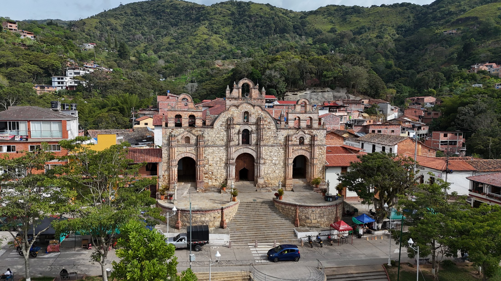
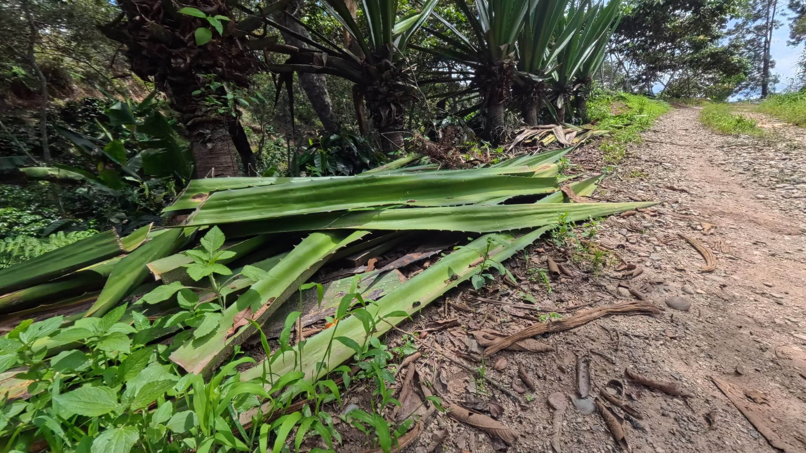
Su fisonomía se caracteriza por un tallo erguido del que brotan hojas largas, carnosas y de un verde intenso, coronadas en su madurez por flores de un tono blanco verdoso. La planta organiza su crecimiento en roseta: las hojas nuevas nacen desde el centro y empujan hacia afuera a las más antiguas, que van descendiendo y abriéndose hasta quedar casi horizontales.
Esa arquitectura es la que hace posible el aprovechamiento sostenido. La extracción de la fibra respeta el ciclo biológico de la planta: los cultivadores cortan las hojas más cercanas a la base —las más maduras, las de fibra más larga y resistente— dejando un mínimo de quince a veinte pencas en el cogollo para garantizar la supervivencia y la regeneración de la mata.
Dejar entre quince y veinte pencas en el cogollo no es una recomendación técnica externa: es un criterio construido por los propios cultivadores a partir de la observación acumulada. Cortar por debajo de ese umbral compromete la capacidad fotosintética de la planta, retrasa la producción de hojas nuevas y, en casos severos, la mata.
Es, en la práctica, una norma de manejo sostenible transmitida oralmente durante generaciones, mucho antes de que existiera un vocabulario formal para nombrarla.
Al término de su vida útil, la planta emite desde el centro un largo tallo floral que puede superar varias veces la altura de la roseta. En el lenguaje local, esa estructura y la planta que la produce se conocen como maguey. Su aparición anuncia el cierre del ciclo: la planta concentra sus reservas en la floración y, tras ella, muere.
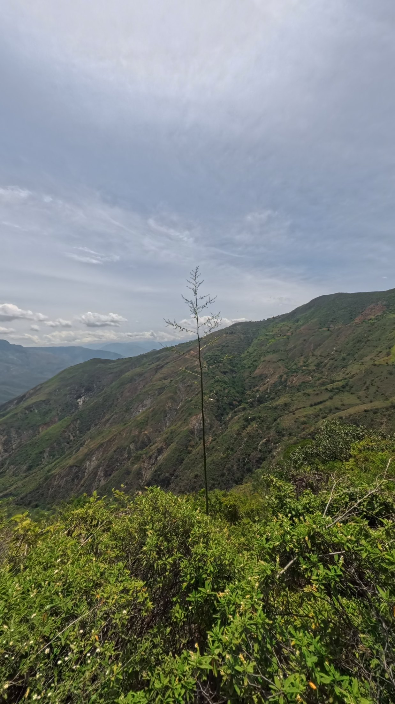
Este desenlace obliga a pensar el cultivo en términos de relevo. Una plantación de fique no se sostiene por la longevidad de sus individuos, sino por la renovación escalonada: mientras unas matas producen, otras crecen y otras florecen. El productor que solo cosecha, sin sembrar reemplazos, condena su parcela a un vaciamiento progresivo.
El fique se adapta a suelos de baja fertilidad y a terrenos de pendiente pronunciada donde la mecanización es imposible. Requiere poca agua, no exige riego permanente y tolera periodos secos prolongados. Estas características lo convirtieron históricamente en el cultivo de las tierras que ningún otro producto quería.
Existe además un beneficio ambiental frecuentemente pasado por alto: por su sistema radicular y su disposición en las laderas, las plantaciones de fique contribuyen a la retención del suelo y a la contención de procesos erosivos en terrenos de alta pendiente, como los que caracterizan buena parte del territorio de Aratoca.
Dentro de la penca, la fibra se organiza en haces longitudinales embebidos en un tejido carnoso y acuoso. Todo el proceso de transformación que se describe en el capítulo siguiente consiste, esencialmente, en una sola operación repetida con distintas herramientas: separar el haz de la pulpa sin romperlo.
De la limpieza con que se logre esa separación dependen la longitud, el brillo, el color y la resistencia del hilo final. Ahí se decide, en buena medida, el valor comercial de la pieza terminada.
Durante el desfibrado únicamente se logra aprovechar alrededor del cuatro por ciento del peso total de la hoja como fibra útil, es decir, como cabuya. El noventa y seis por ciento restante se convierte en biomasa residual, conocida coloquialmente como bagazo.
La magnitud de esa proporción es difícil de exagerar. Por cada arroba de fibra que sale de una parcela, quedan en el terreno y en el punto de lavado varias veces ese peso en material vegetal húmedo. Tradicionalmente, este subproducto ha sido desaprovechado.
El problema no es solo de volumen sino de destino. Debido a las prácticas de lavado de la fibra, los jugos del bagazo suelen verterse en fuentes hídricas, generando impactos ambientales negativos sobre quebradas y nacimientos que, en zonas de ladera, abastecen a las mismas veredas donde se procesa la fibra.
Reconocer esto no es un señalamiento a las familias productoras. Es la constatación de un vacío técnico: durante décadas no existió alternativa disponible, económica y practicable para disponer de ese residuo. El agua era el único vehículo a la mano.
El recorrido que va de la penca cortada al hilo terminado comprende seis fases claramente diferenciadas. Cada una tiene sus tiempos, sus herramientas y sus criterios de calidad.
Se cortan las hojas maduras de la planta de fique y se realiza la clasificación según su calidad. Se privilegian las pencas de la base, de mayor longitud y madurez, respetando siempre el mínimo de quince a veinte hojas en el cogollo.
Se separa la fibra de la masa carnosa de la hoja. El proceso puede realizarse por varillado —el método manual y tradicional, en el que la penca se raspa contra una vara fija hasta desprender la pulpa— o de manera maquinada, mediante desfibradoras mecánicas que aumentan el rendimiento por jornada.
Las fibras extraídas se sumergen en agua durante doce a quince horas, se lavan para retirar los residuos de pulpa y los jugos adheridos, y luego se extienden al sol para su secado. De esta fase depende directamente el color final de la cabuya: un lavado incompleto o un secado a la sombra oscurecen y manchan la fibra.
El lavado es, simultáneamente, la fase que define la calidad comercial de la fibra y la que concentra el mayor impacto ambiental del oficio. Cualquier mejora técnica en este punto —recirculación del agua, sedimentadores, captura de jugos para compostaje— tiene un efecto doble: mejora el producto y protege la quebrada.
Los manojos secos se pasan por un cepillo de clavos para desenredar, pulir y limpiar la fibra. La operación alinea los filamentos en una misma dirección y separa la fibra larga —la de mayor valor— de la corta y quebrada, que se destina a usos secundarios.
Es el proceso en el que la fibra se tuerce para formar hilos. Del grosor y de la tensión del torcido dependen la resistencia y el destino de la cabuya: hilo fino para tejidos de detalle, hilo grueso para empaques y suelas. Si se desea, en esta fase se tiñe usando tinturas naturales o artificiales.
El hilo se teje en telares, ganchillos o máquinas para crear productos utilitarios como costales, bolsos, manteles, tapetes o papel artesanal. Es la fase donde se concentra el diseño y donde, en consecuencia, se genera la mayor proporción del valor agregado de la cadena.
Investigaciones recientes apuntan a que el material residual del desfibrado alberga un enorme potencial para la creación de insecticidas naturales, abonos orgánicos, agrotextiles y biomantos, abriendo la puerta a una bioeconomía circular.
El cambio de mirada que esto supone es profundo. Lo que hoy se descarta como desecho —y que además genera un pasivo ambiental— podría convertirse en una segunda línea de ingresos para la misma familia que ya realiza el desfibrado, sin necesidad de sembrar una hectárea adicional. El insumo ya está allí, producido y disponible.
El noventa y seis por ciento que hoy se pierde es la mayor reserva sin explotar del sector fiquero.
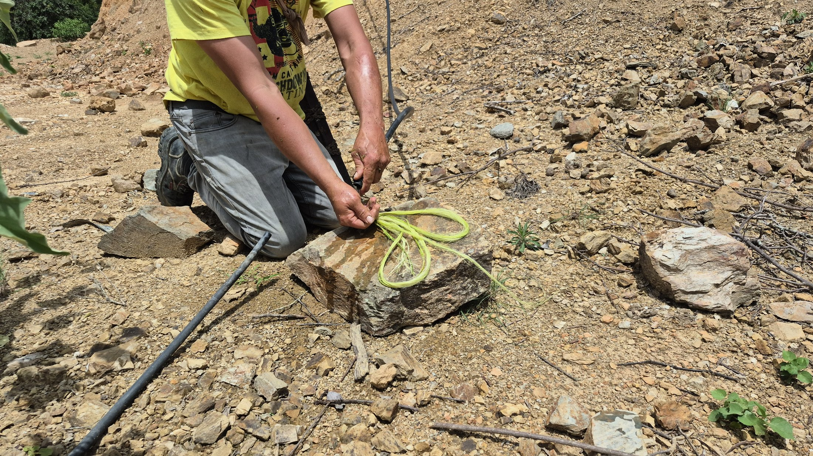
La mayoría de los artesanos se dedican a la etapa del hilado, utilizando herramientas manuales y telares horizontales rústicos. Se trata de dispositivos construidos localmente, con materiales del entorno, ajustados a la medida de quien los usa y reparados por la misma persona que los opera. Esa autonomía técnica —la capacidad de fabricar y mantener la propia herramienta— es parte inseparable del oficio.
Aunque una gran proporción del hilo se destina a la elaboración de empaques agrícolas, un valioso porcentaje se transforma en artesanías diversificadas como tapetes, sombreros, individuales y alpargatas. La diferencia entre un destino y otro no está en la fibra, sino en la decisión de diseño y en el tiempo de trabajo que se le dedique.
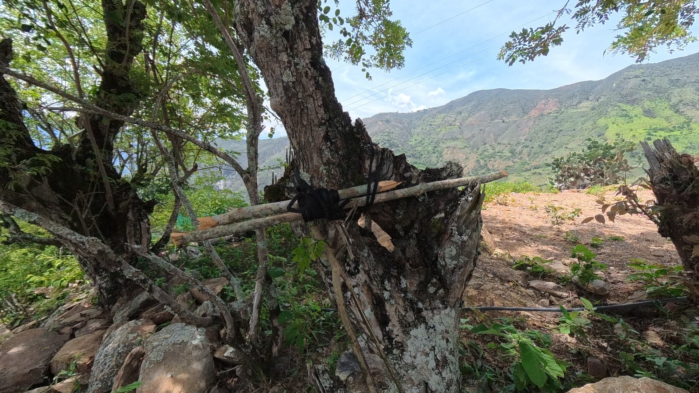
El varillado exige una combinación precisa de fuerza y control. Demasiada presión rompe los filamentos y produce fibra corta, de menor valor; muy poca deja pulpa adherida que oscurece la cabuya durante el secado. Ese punto medio no se explica: se calibra con años de práctica y se corrige, en el aprendizaje, con la mano del maestro sobre la del aprendiz.
Por eso la desaparición de un artesano mayor no representa únicamente una pérdida afectiva para la comunidad. Representa la pérdida de un conjunto de criterios que no están escritos en ninguna parte: cómo reconocer una penca en punto, cuánto tiempo dejar la fibra en el agua según el clima de la semana, cómo leer el color del secado.
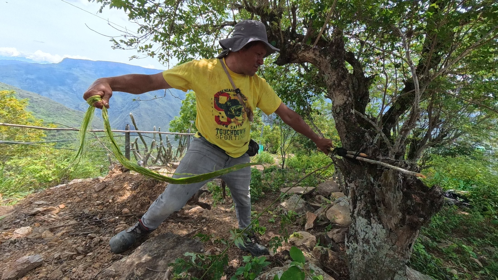
En el acabado, el telar horizontal sigue siendo la herramienta dominante para las piezas de mayor formato. El ganchillo, más versátil y portátil, permite trabajar en tiempos fragmentados —entre las labores de la casa y las del cultivo— y por eso concentra buena parte de la producción de bolsos y accesorios.
En esta fase, la asociatividad ha demostrado ser una herramienta clave de supervivencia, permitiendo a las comunidades preservar técnicas tradicionales como el teñido natural y mantener vivo el taller familiar.
Su utilidad es concreta y verificable. Asociarse permite comprar insumos en volumen y a mejor precio; compartir equipos que ninguna familia podría adquirir por separado; sostener un estándar de calidad común que hace posible atender pedidos grandes; y, sobre todo, negociar directamente con el comprador final, reduciendo la dependencia del intermediario.
Un artesano solo vende lo que alcanza a producir y acepta el precio que le ofrezcan. Un grupo organizado vende un catálogo, sostiene un inventario, responde a un pedido en firme y fija un precio con base en sus costos reales. La diferencia no es de escala: es de posición en la cadena.
El teñido natural, realizado con pigmentos obtenidos de plantas y minerales de la región, constituye uno de los saberes más frágiles del oficio y, a la vez, uno de los de mayor potencial diferenciador en el mercado contemporáneo. Cada receta —qué planta, en qué proporción, cuánto tiempo, a qué temperatura— es un conocimiento local que no puede replicarse industrialmente sin perder su carácter.
Documentar esas recetas, con nombre de quien las aporta y detalle de sus proporciones, es una de las tareas más urgentes que enfrenta cualquier proceso de salvaguardia del oficio fiquero en Aratoca.
El saber no se pierde de golpe. Se pierde receta por receta, nombre por nombre, mano por mano.
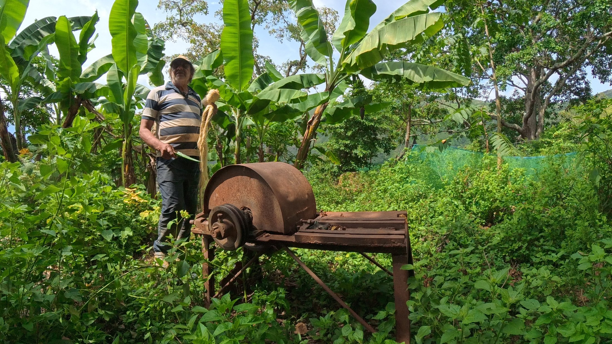
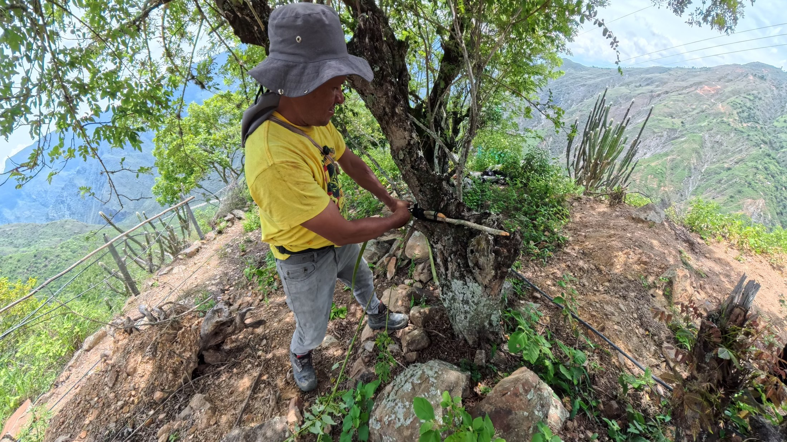
Las páginas anteriores describieron un oficio con una profundidad histórica poco común y con una fragilidad presente igualmente notable. Ambas cosas son ciertas al mismo tiempo, y cualquier lectura que sacrifique una de las dos produce un diagnóstico incompleto: la celebración sin diagnóstico no cambia nada, y el diagnóstico sin reconocimiento del valor cultural conduce al abandono.
Es indispensable superar las tecnologías de bajo rendimiento y mitigar los impactos ambientales del procesamiento de la hoja. Al mismo tiempo, la organización comunitaria debe apuntar a la dignificación del trabajo artesanal, reduciendo la dependencia de intermediarios e impulsando la creación de valor agregado.
De todo lo expuesto se desprenden cuatro líneas de acción que resultan simultáneas y no sucesivas: ninguna de ellas rinde frutos si las demás se descuidan.
Ninguna de las líneas anteriores tiene sentido si no hay quién las ejecute dentro de veinte años. El desafío más serio que enfrenta el oficio fiquero no es tecnológico ni comercial: es demográfico. Los portadores del saber envejecen y las nuevas generaciones no encuentran en el oficio, tal como está estructurado hoy, una alternativa de ingreso comparable a la migración.
Revertir eso exige que el fique deje de presentarse a los jóvenes como una herencia que hay que conservar por deber y empiece a presentarse como lo que puede llegar a ser: un material con demanda creciente en mercados que valoran lo biodegradable, lo trazable y lo hecho a mano. La conversación cambia por completo cuando el argumento deja de ser la nostalgia y pasa a ser la oportunidad.
El encuentro intergeneracional es, en ese sentido, el mecanismo más eficaz de salvaguardia disponible. Los artesanos mayores aportan criterio técnico y memoria; los jóvenes aportan lenguaje visual, manejo de herramientas digitales y acceso a canales de venta que antes no existían. Ninguno de los dos grupos puede sostener el oficio por separado.
Documentar. Registrar en audio y video las técnicas de los maestros que hoy están activos; consignar por escrito las recetas de teñido natural con nombre de su portador; levantar fichas de cada proceso con materiales, tiempos y costos reales.
Es la tarea de menor costo y mayor retorno de todas las enumeradas en este capítulo, y la única cuya ventana de oportunidad se cierra sola con el paso del tiempo.
El fique no es solo una materia prima: es un vehículo de identidad comunitaria que, al combinarse con emprendimiento y nuevas perspectivas técnicas, puede generar alternativas de ingresos reales y sostenibles para sus pobladores.
Aratoca tiene a su favor una combinación que pocos municipios pueden reclamar: un saber técnico vivo, un paisaje productivo reconocible, una posición estratégica sobre el corredor turístico del cañón y una tradición documentada que se remonta al pueblo Guane. El reto no consiste en inventar un futuro para el fique, sino en organizar el que ya está ocurriendo en los talleres del municipio.
Se recogen aquí los términos empleados a lo largo del libro, en el sentido en que los usan los artesanos y cultivadores de Aratoca y de la provincia de Guanentá. Se organizan por etapas del oficio y no en orden alfabético, para que puedan leerse siguiendo el recorrido de la fibra.
Muchos de estos términos no aparecen en los diccionarios generales y varían de una vereda a otra. Registrarlos con la forma exacta en que los pronuncia quien los usa —y no en una versión normalizada— es parte del trabajo de salvaguardia que este libro apenas inicia.
Los contenidos de esta primera edición se construyeron a partir de tres tipos de fuentes: el trabajo de documentación territorial adelantado en el municipio de Aratoca; la revisión de información pública disponible sobre el sector fiquero colombiano; y los testimonios de cultivadores y artesanos del municipio, recogidos durante el registro fotográfico que ilustra estas páginas.
Las provincias de Guanentá y Comunera concentran la producción departamental. Los municipios referenciados a lo largo de la obra son Aratoca, Curití, Mogotes, Onzaga, San Gil y San Joaquín.
Esta obra se concibe como un documento abierto. Los artesanos, cultivadores, docentes e investigadores que deseen aportar correcciones, testimonios, recetas de teñido o fichas técnicas de proceso pueden dirigirse a la Secretaría de Cultura de la Alcaldía Municipal de Aratoca, con miras a una segunda edición ampliada.
Todas las fotografías de esta edición fueron registradas en el municipio de Aratoca, Santander. Autoría:
Los datos cuantitativos citados en los capítulos segundo y cuarto —hectáreas sembradas a nivel nacional, participación de familias campesinas e indígenas en el cultivo y rendimiento de fibra por hoja procesada— corresponden a los órdenes de magnitud reportados para el sector fiquero colombiano y se presentan como referencia de contexto, no como medición local del municipio de Aratoca.
La Alcaldía Municipal de Aratoca agradece a las familias cultivadoras y artesanas que permitieron el registro fotográfico de su trabajo en parcela y en taller. Sin esa apertura, este libro no existiría.
Durante generaciones, el fique fue en Aratoca mucho más que un cultivo: fue el oficio que sostuvo la casa y el hilo que unió a las familias campesinas de la provincia de Guanentá.
Este libro reúne, por primera vez en un solo volumen, la historia larga de esa fibra —desde la herencia del pueblo Guane hasta la crisis de los años ochenta y la reinvención actual—, la descripción técnica de las seis fases que van de la penca al telar, y una lectura franca de los retos que enfrenta el sector: la dependencia de intermediarios, la informalidad del taller familiar y el aprovechamiento pendiente del noventa y seis por ciento de la hoja que hoy se descarta.
No es un homenaje nostálgico. Es una herramienta de trabajo para artesanos, jóvenes, docentes y gestores culturales que quieran entender —y transformar— el presente productivo del municipio.